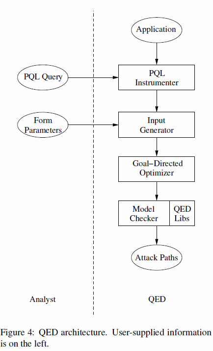

SQL Injection:
Attacks and Defenses
Rui Zhao, Chuan Yue, and Bernardo Trindade
Presentation made using reveal.js
About Us
Vision: Security-integrated CS Education
- Integrate cybersecurity topics into CS courses
- CS students have no way to escape cybersecurity education
- CS students understand the correlation and interplay between cybersecurity and other sub-areas of CS
- Job, career, etc.
- Evaluate the teaching and learning effectiveness
- Promote the adoption of this approach
About Me
- Graduated from Mines May 2016 with B.S. Computer Science and ASI in Mechanical Engineering
- Did security research here at Mines with Dr. Chuan Yue
- Went to DEFCON 24 this year
- I take and help set up courses for Software Freedom School
SQL Injection
What is SQL Injection
- A type of injection attack
- SQL commands are injected as user input in order to affect the execution of predefined SQL commands
- Occurs when:
- data comes from an untrusted source
- data is used to dynamically construct a SQL query
- https://www.owasp.org/index.php/SQL_Injection
Consequences
If an attacker exploits this vulnerability they can:
- Drop data from the database
- Change or insert data
- Dump potentially sensitive data
- Own the database
In special cases an attacker can use the database to take over the entire computer
Rated #1 of OWASP top 10 Vulnerabilities in 2013
How does it work?
A webserver will handle a form with code like this:
// $conn will be the variable the holds our connection to our database
$string = $_POST['product_string'];
$query = "SELECT id FROM products WHERE name='$string'";
$result = odbc_exec($conn, $query);
[My Cool Product] on the form, this is how it gets
processed:
$string = "My Cool Product";
$query = "SELECT id FROM products WHERE name='My Cool Product'";
['My Cool Product]?
Then we get interesting effects
$string = "'My Cool Product";
$query = "SELECT id FROM products WHERE name=''My Cool Product'";
//Syntax or Command not found error depending on the server config
Because the user input gets interpolated to make a query string, instead of this:
SELECT id
FROM products
WHERE
name = 'My Cool Product';
the server receives this:
SELECT id
FROM products
WHERE
name = ''
My Cool Product';
This weird behavior is used to inject extra SQL commands into the query
Let's hack something!

References
- Attacker VM: Kali 2.0 LXDE
- Target VM: Vulnhub Image: De-ICE: S1.120
Defense
General Recommendations
- Avoid the interpreter entirely
- Use an interface that supports bind variables (we'll go over some options)
- Encode all user input before passing it to an interpreter
- scrub your input
- Maintain a "white list" of allowed SQL statements
- Minimize privileges
Check out resources like the OWASP SQL Injection Cheat Sheet
Bind Variables
The goal is to design your web server so that if you get malicious input, it doesn't affect the rest of your logic. A few strategies you can use:
Prepared Statements
Instead of dynamically creating a statement based on the user's input, we can use objects that maintain a strict separation between code and data
String query = "SELECT account_balance FROM user_data WHERE user_name = ?";
PreparedStatement pstmt = connection.prepareStatement(query);
String custname = request.getParameter("customerName")
pstmt.setString(1, custname);
ResultSet results = pstmt.executeQuery();
Stored Procedures
SQL code is defined and stored in the database itself and then called from the application
String custname = request.getParameter("customerName");
CallableStatement cs = connection.prepareCall("{call sp_getAccountBalance(?)}");
cs.setString(1, custname);
Escaping User Input
The goal is you escape or remove characters from the user that could be used for SQL Injection.This is NOT guaranteed to prevent SQLI. This is a mitigation technique that will force attackers to be more creative.
Codec ORACLE_CODEC = new OracleCodec();
String uid = ESAPI.encoder().encodeForSQL(ORACLE_CODEC, req.getParameter("userID"));
String pass = ESAPI.encoder().encodeForSQL(ORACLE_CODEC, req.getParameter("password"));
String query = "SELECT user_id FROM user_data WHERE user_name = '" + uid + "' and user_password = '" + pass +"'";
Interesting Research
- "AMNESIA: Analysis and Monitoring for NEutralizing SQL
Injection Attacks", ASE, 2005
William G. J. Halfond, Alessandro Orso - "Automatic Generation of XSS and SQL Injection
Attacks with Goal-Directed Model Checking", USENIX Security
Symposium, 2008
Michael Martin, Monica S. Lam - "Automated Testing for SQL Injection Vulnerabilities: An
Input Mutation Approach", ISSTA, 2014
Dennis Appelt, Cu Duy Nguyen, Lionel C. Briand, Nadia Alshahwan
AMNESIA
- Static analysis to automatically build a model of legitimate queries the application could generate
- Dynamic analysis to monitor generated queries at runtime and checks them for compliance with the model
- Any queries that violate the model are classified as illegal and blocked before being executed
Automatic Generation of SQL Injection Attacks Using Model Checking
This uses a goal-directed model-checking system to automatically generate attacks exploiting taint-based vulnerabilities in large Java web applicationsModel checking: given a model of a system, exhaustively and automatically check whether this model meets a given specification.
- untrusted data from the user is tracked as it flows through the system
- if it flows into a secure "zone" of the model where it could exploit something the vulnerability gets flagged
We need to analyze more than just individual requests. We can instead analyze the information flow of our application to find all the vulnerabilities in our application.
|
 |
Generating Attacks Using Mutation
A black box approach to testing an application for SQLI.Start with a string for SQL Injection and begin changing, or mutating, it to generate a new string that will get through security filters.
- Start with malicious input and mutate it to generate new test strings
- Monitor code listens at the proxy level before the query is executed to see which queries got through
Mutation Operations
- Behavior Changing Operations
- Add an OR to the input. Ex:
"OR 1=1" - Add an AND clause. Ex:
"AND 1=2" - Add a semicolon and an additional SQL statement. Ex:
"; SELECT wait-for(5) FROM dual"
Mutation Operations
- Syntax Repairing Operations
- Add a closing parenthesis Ex:
"WHERE char=CHR(67) OR 1=1 )" - Add a comment. Ex:
"WHERE char=CHR(67) OR 1=1 #)" - Add a quotation character. Ex:
"id='' OR 1=1"
Mutation Operations
- Obfuscation Operations
- Replaces whitespace with an equivalent character. Ex: T
"id=3+OR+1=1" - Replaces a character value with an ASCII representation. Ex:
"'a'=x'61'" - Replace characters with their HTML encoded values. Ex:
"OR "a"="a"" - Replaces a character with their percent encoding. Ex:
"id=3 OR%201=1" - Replaces a boolean with an equivalient expression. Ex:
"1=1"becomes"NOT false=!!1"
- Obfuscate SQL keywords
- Randomly change the case of letters in keyword. Ex:
"1' oR 1=1" - Adding comments in the middle of keywords. Ex:
"1' O/* random comment */R 1=1" - Replacing a keyword with an alternative representation Ex:
"1' || 1=1"
Fuzzy Computing
This is a great example of fuzzy computing. These mutation operators have rules for when they are applied, but the programmer has no idea what statements will be generated. This method allows for testing with crazy strings a human would have a hard time finding to ensure your website can defend against these techniques.The End

http://xkcd.com/327/